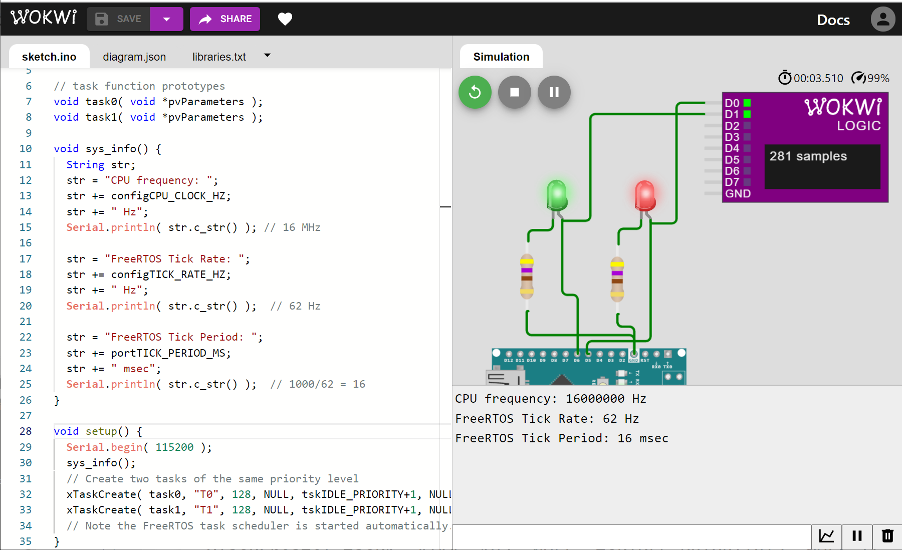
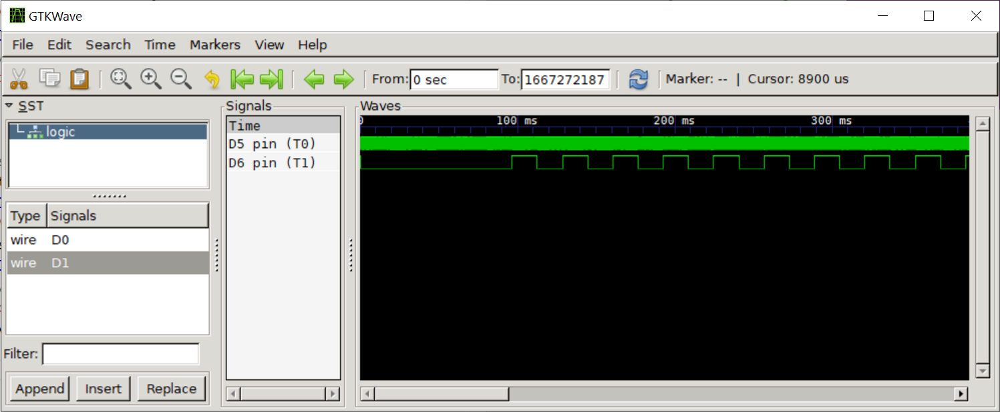

Arduino-FreeRTOS for AVR (Part 2)#
บทความนี้ (ตอนที่ 2) นำเสนอตัวอย่างการเขียนโค้ดโดยใช้ FreeRTOS Library สำหรับบอร์ดไมโครคอนโทรลเลอร์ Arduino ที่ใช้ชิป 8-bit Atmel AVR (เช่น บอร์ด Uno | Nano | MEGA2560) และใช้ซอฟต์แวร์ Arduino IDE ในการเขียนโค้ด รวมถึงสาธิตการจำลองการทำงานด้วย Web-based Wokwi AVR Simulator
Keywords: Arduino, 8-bit AVR, RTOS, FreeRTOS, Wokwi Simulator
▷ การสร้างทาสก์และการกำหนดระดับความสำคัญของทาสก์#
จากเนื้อหาในบทความก่อนหน้านี้ (ตอนที่ 1)
เราได้เห็นตัวอย่างการเขียนโค้ด เพื่อสร้างทาสก์ด้วย FreeRTOS
โดยใช้คำสั่ง xCreateTask() ไปบ้างแล้ว
BaseType_t xTaskCreate( TaskFunction_t pvTaskCode,
const char * const pcName,
configSTACK_DEPTH_TYPE usStackDepth,
void *pvParameters,
UBaseType_t uxPriority,
TaskHandle_t *pxCreatedTask );
ระดับความสำคัญของทาสก์ (Task Priority Level) เป็นหนึ่งอาร์กิวเมนต์สำหรับฟังก์ชันดังกล่าวเมื่อมีการสร้างทาสก์ขึ้นใหม่
โดยทั่วไปแล้วก็ ระดับความสำคัญของทาสก์ใน FreeRTOS จะมีค่ามากกว่า 0
และค่าต่ำสุดคือ 0 ซึ่งใช้กับ Idle Task (tskIDLE_PRIORITY = 0)
และมีค่าสูงสุดคือ configMAX_PRIORITIES-1
(ค่าของ configMAX_PRIORITIES เท่ากับ 4 ในไฟล์
FreeRTOSConfig.h)
การทำงานของ FreeRTOS โดยทั่วไป จะอยู่ในโหมด Preemptive Scheduling
(ดูได้จากการกำหนดค่า configUSE_PREEMPTION ให้เป็น 1 ในไฟล์
FreeRTOSConfig.h)
ทาสก์มีความสำคัญแตกต่างกันได้ และทาสก์ที่มีความสำคัญสูงกว่าและพร้อมที่จะทำงาน (READY) จะได้รับการจัดลำดับให้ทำงานได้ก่อนทาสก์ที่มีความสำคัญต่ำกว่า
ทาสก์ที่มีความสำคัญต่ำกว่าอาจจะถูกหยุดการทำงานชั่วคราว หรือถูกแทรกกลางคัน (Preemption) โดยทาสก์ที่มีความสำคัญมากกว่าและมีความจำเป็นที่ต้องรีบทำงานหรือตอบสนองต่อเหตุการณ์ได้ทันตามระยะเวลาที่กำหนดไว้
โดยทั่วไป RTOS จึงใช้วิธีกำหนดความสำคัญให้แก่ทาสก์ เพื่อให้ตอบสนองต่อเหตุการณ์หรือได้ทำงานทันเวลา ทาสก์ที่มีความสำคัญมากกว่า จะไม่ทำงานตลอดเวลา เพราะจะทำให้ทาสก์ที่มีความสำคัญน้อยกว่าไม่มีโอกาสได้ทำงาน
ในกรณีที่มีหลายทาสก์ที่มีระดับความสำคัญเท่ากัน ก็จะใช้วิธีการเลือกและจัดสรรเวลาการทำงานของซีพียูแบบ Round-Robin Scheduling (วนไปตามลำดับ)
การทำงานของ FreeRTOS นอกจากโหมด Preemptive Scheduling แล้วยังมีโหมด Co-operative Scheduling ให้เลือกใช้ได้เช่นกัน ในโหมดนี้ ในกรณีนี้ ทาสก์ทั้งหมดมีความสำคัญเท่ากัน และจะไม่มีการหยุดตามจังหวะของ RTOS Timer เพื่อเปลี่ยนให้ทาสก์อื่นได้ทำงาน ทาสก์ทำงานไปจนกว่าจะยอมปล่อย (Task Yield) ให้ทาสก์อื่นได้ทำงานต่อไป
▷ ตัวอย่างที่ 1: การสร้างทาสก์เพื่อเปลี่ยนสถานะที่ขาเอาต์พุต#
ลองมาดูตัวอย่างการสร้างทาสก์ T0 และ T1 ตามลำดับ
ทั้งสองทาสก์มีระดับความสำคัญเท่ากัน เพื่อทำให้วงจร LED แต่ละดวง ที่ต่อกับขาเอาต์พุต D5 และ D6
กระพริบได้ด้วยอัตราคงที่ แต่ใช้อัตราการกระพริบที่แตกต่างกัน
#include <Arduino_FreeRTOS.h>
#define LED0_PIN 5 // D5 pin
#define LED1_PIN 6 // D6 pin
// task function prototypes
void task0( void *pvParameters );
void task1( void *pvParameters );
void sys_info() {
String str;
str = "CPU frequency: ";
str += configCPU_CLOCK_HZ;
str += " Hz";
Serial.println( str.c_str() ); // 16 MHz
str = "FreeRTOS Tick Rate: ";
str += configTICK_RATE_HZ;
str += " Hz";
Serial.println( str.c_str() ); // 62 Hz
str = "FreeRTOS Tick Period: ";
str += portTICK_PERIOD_MS;
str += " ms";
Serial.println( str.c_str() ); // 1000/62 = 16
}
void setup() {
Serial.begin( 115200 );
sys_info();
// Create two tasks of the same priority level
xTaskCreate( task0, "T0", 128, NULL,
tskIDLE_PRIORITY+1, NULL );
xTaskCreate( task1, "T1", 128, NULL,
tskIDLE_PRIORITY+1, NULL );
// Note the FreeRTOS task scheduler is started automatically.
}
void loop() {}
// task enty function for T0
void task0( void *pvParameters ) {
boolean state = false;
pinMode( LED0_PIN, OUTPUT );
while (1) {
// toggle LED0 output
digitalWrite( LED0_PIN, state = !state );
// delay for one tick
vTaskDelay( 1 /* ticks */ );
}
}
// task entry function for T1
void task1( void *pvParameters ){
boolean state = false;
pinMode( LED1_PIN, OUTPUT );
// delay for 100 ticks
vTaskDelay( 100 /* ticks */ );
while (1) {
// toggle LED1 output
digitalWrite( LED1_PIN, state = !state );
// delay for two ticks
vTaskDelay( 2 /* ticks */ );
}
}
ทาสก์ T0 จะทำให้เกิดการสลับสถานะลอจิกของเอาต์พุต D5
ทุก ๆ 1 tick × 16ms per OS tick = 16ms
และทาสก์ T1 จะอัปเดทเอาต์พุต D6 ทุก ๆ 2 ticks × 16ms per OS tick = 32ms
ดังนั้นสัญญาณเอาต์พุตที่ขา D5 จะมีความถี่สูงกว่าเป็นสองเท่าของสัญญาณเอาต์พุตที่ขา D6
สังเกตว่า ทาสก์ T1 (เอาต์พุตที่ขา D6) เมื่อเริ่มต้นทำงานจะถูกหน่วงเวลาไว้ก่อน นับไป 100 ticks ก่อนเข้าสู่
while(1){…} ในช่วงเวลานี้ จะไม่มีการเปลี่ยนแปลงที่ขาเอาต์พุต D6
แต่ในขณะที่ทาสก์ T0 เริ่มต้นทำงานแล้วเข้าสู่ while(1){…} โดยไม่มีการรอ
และเกิดการสลับลอจิกที่ขาเอาต์พุต D5 ก่อนที่จะเห็นการเปลี่ยนเปลี่ยนแปลงที่ขา D6 ในช่วงเวลาถัดไป
มาดูตัวอย่างผลการจำลองการทำงานด้วย Wokwi Simulator และบันทึกการเปลี่ยนแปลงที่ขาเอาต์พุต ด้วย Wokwi Logic Analyzer

รูป: การจำลองการทำงานของโค้ดตัวอย่างด้วย Wokwi Simulator
รูป: คลื่นสัญญาณที่ได้บันทึกลงในไฟล์ .vcd แล้วแสดงผลด้วยโปรแกรม GTKWave
จากรูปคลื่นสัญญาณจะเห็นได้ว่า ที่ขาเอาต์พุต D6 ในช่วงแรกยังไม่มีการเปลี่ยนแปลงใด ๆ แต่ในขณะที่เอาต์พุต
D5 มีการเปลี่ยนแปลงตั้งแต่เริ่มต้น
รูป: คลื่นสัญญาณและการวัดระยะเวลาด้วย Markers
จากรูปคลื่นสัญญาณจะเห็นได้ว่า ที่ขาเอาต์พุต D6 จะเริ่มมีการเปลี่ยนแปลงที่เอาต์พุตเมื่อเวลาผ่านไปประมาณ
1600ms (= 100 ticks × 16 ms per OS tick)
รูป: การวัดความกว้างของคาบสัญญาณที่ขาเอาต์พุต D5
ซึ่งได้เท่ากับ 32ms (= 2 ticks × 16ms per OS tick)
รูป: การวัดความกว้างของพัลส์ช่วงที่เป็น Low ที่ขาเอาต์พุต D5 ซึ่งได้ประมาณ 16ms (= 1 OS tick)
รูป: การวัดความกว้างของคาบสัญญาณที่ขาเอาต์พุต D6
ซึ่งได้เท่ากับ 64ms (= 4 OS ticks)

รูป: การวัดความกว้างของพัลส์ช่วงที่เป็น High ที่ขาเอาต์พุต D6 ซึ่งได้ประมาณ 32 ms (= 2 OS ticks)
ช่อง 1 (สีเหลือง) คือ เอาต์พุตที่ขา D5 และช่อง 2 (สีฟ้าอมเขียว) คือ เอาต์พุตที่ขา D6
รูป: คลื่นสัญญาณที่ได้จากการทดลองโดยใช้ฮาร์ดแวร์จริงและวัดสัญญาณด้วยเครื่องออสซิลสโคป
ข้อสังเกต: ความกว้างของ 1 OS tick ที่ได้จากการวัดคลื่นสัญญาณเอาต์พุตจริง มีค่าประมาณ 17ms ซึ่งมากกว่า 16ms ตามที่ระบุไว้ใน Datasheet ของ AVR และจากผลการจำลองการทำงาน
▷ ตัวอย่างที่ 2: การสร้างทาสก์ที่มีระดับความสำคัญแตกต่างกัน#
ตัวอย่างถัดไป เป็นการสร้างทาสก์ เช่น ตั้งชื่อว่า T0 และ T1
ทั้งสองทาสก์จะทำให้เกิดการเปลี่ยนสถานะที่เอาต์พุตสำหรับ LED สำหรับขา D5 และ D6 ตามลำดับ
แต่มีความสำคัญแตกต่างกัน โดยกำหนดให้ค่าความสำคัญดังนี้ T0 ต่ำกว่า T1
#include <Arduino_FreeRTOS.h>
#define LED0_PIN 5 // D5
#define LED1_PIN 6 // D6
#define DELAY_TICKS (6)
void task0( void *pvParameters );
void task1( void *pvParameters );
void setup() {
xTaskCreate( task0, "T0", 192, NULL,
tskIDLE_PRIORITY+1, NULL );
xTaskCreate( task1, "T1", 192, NULL,
tskIDLE_PRIORITY+2, NULL );
// Note the FreeRTOS task scheduler is started automatically.
}
void loop() {}
// task entry function for T0
void task0( void *pvParameters ) {
boolean state = false;
pinMode( LED0_PIN, OUTPUT );
while (1) {
// toggle LED0 output as fast as possible
digitalWrite( LED0_PIN, state = !state );
}
}
// task entry function for T1
void task1( void *pvParameters ){
boolean state = false;
pinMode( LED1_PIN, OUTPUT );
vTaskDelay( DELAY_TICKS );
while (1) {
// toggle LED1 output as fast as possible
digitalWrite( LED1_PIN, state = !state );
}
}
ถ้าสังเกตการทำงานของโค้ดตัวอย่างนี้ ในส่วนของ task1(){…} สำหรับทาสก์ T1
จะมีการทำคำสั่ง vTaskDelay( DELAY_TICKS ) ก่อนเข้าสู่ while(1){…}
ดังนั้นทาสก์ T1 จะถูกหยุดการทำงานชั่วคราวเป็นเวลา DELAY_TICKS (= 6 OS Ticks)
และอยู่ในสถานะ BLOCKED
ในขณะที่ทาสก์ T0 จะได้ทำงานทันที ในช่วงเวลานี้ สังเกตได้ว่า
สัญญาณเอาต์พุตจะเกิดการเปลี่ยนแปลงที่ขา D5
(แสดงว่า ทาสก์ T0 กำลังทำงาน)
หลังจากนั้นเมื่อเวลาผ่านไป WAIT_TICKS ทาสก์ T1 ที่เคยอยู่ในสถานะ BLOCKED
ก็เปลี่ยนมาอยู่ในสถานะ READY และเมื่อเกิด Tick Interrupt ในครั้งถัดไป
จะมีการเลือกให้ทาสก์ T1 ได้ทำงาน เนื่องจากมีความสำคัญสูงกว่า T0
ที่กำลังทำงานอยู่ในสถานะ RUNNING ในขณะนั้น
และ T0 ก็จะถูกหยุดไว้ชั่วคราว (แต่อยู่ในสถานะ READY)
ทาสก์ T1 เมื่อได้ทำงานแล้วจะทำต่อเนื่องไป จนกว่าจะเกิด Tick Interrupt
เพื่อให้ Task Scheduler ได้ทำงานช่วงสั้น ๆ (หรืออาจหยุดชั่วคราวเป็นช่วงเวลาสั้น ๆ
เนื่องจากมีเหตุการณ์ที่เป็นอินเทอร์รัพท์ของ Arduino เกิดขึ้นในระบบ)
หลังจากนั้น ทาสก์ T1 ก็จะได้รับเลือกให้ทำงานอีกเป็นลำดับแรก หรือทำงานต่อไป
เพราะมีความสำคัญสูงกว่าทาสก์ T0
ถ้าดูจากคลื่นสัญญาณเอาต์พุต ในช่วงเวลานี้จะเห็นได้ว่า มีการเปลี่ยนแปลงสถานะลอจิกที่ขา D6
(ทาสก์ T1 กำลังทำงาน) แต่ไม่เกิดขึ้นกับขา D5 (ทาสก์ T0 ไม่ได้ทำงาน)
รูป: คลื่นสัญญาณเอาต์พุตที่ได้จากการจำลองการทำงานด้วย Wokwi Simulator
จากรูปจะเห็นได้ว่า ในช่วงแรกมีการทำงานของ T0 และเกิดการเปลี่ยนแปลงที่ขา D5
เป็นระยะเวลาประมาณ 95.926ms หรือประมาณ 96ms (= 6 OS ticks × 16 ms per OS tick)
แล้วจึงเปลี่ยนให้ทาสก์ T1 ได้ทำงาน
รูป: การสลับสถานะลอจิกที่ขาเอาต์พุต เกิดขึ้นทุก ๆ 4.438us (ไมโครวินาที) โดยประมาณ
รูป: แสดงช่วงเวลาที่มีการเปลี่ยนจากการทำงานของทาสก์ T0 ไปสู่การทำงานของทาสก์ T1
จับเวลาจากเหตุการณ์ที่ขาเอาต์พุต D5 ครั้งสุดท้าย และเหตุการณ์ที่ขาเอาต์พุต D6 ครั้งแรก
ใช้เวลาประมาณ 38.375 us ในกรณีตัวอย่างนี้
ข้อสังเกต: ความกว้างของพัลส์ที่เกิดขึ้นกับสัญญาณเอาต์พุต จะมากหรือน้อยขึ้นอยู่กับการทำคำสั่งภายใน
while(1){...} เช่น สำหรับ LED1_PIN ที่ใช้กับทาสก์ T1
while (1) {
// toggle LED1 output as fast as possible
digitalWrite( LED1_PIN, state = !state );
}
ในโค้ดตัวอย่างนี้ ขาเอาต์พุต LED1_PIN ตรงกับขา D6 ของ Arduino Pin
และตรงกับขา PD6 (พอร์ต PORTD บิตที่ 6) ของชิป ATmega328P
หากลองเปลี่ยนรูปแบบการเขียนโค้ดใหม่ดังนี้
จะทำส่งผลอย่างไรบ้างต่อสัญญาณเอาต์พุตเมื่อจำลองการทำงาน
while (1) {
// toggle LED1 / PD6 output as fast as possible
PIND |= _BV(PD6);
}
รูป: คลื่นสัญญาณที่ได้จากการจำลองการทำงานและเปรียบเทียบกันระหว่างเอาต์พุตที่ขา D5
และ D6 จะเห็นได้ว่า เอาต์พุตที่ขา D6 มีการเปลี่ยนแปลงในอัตราที่เร็วกว่าอย่างเห็นได้ชัด
ซึ่งแสดงให้เห็นถึง Overhead จากการใช้คำสั่ง digitalWrite() ของ Arduino API
รูป: การวัดความกว้างของพัลส์ช่วงที่เป็น High ของเอาต์พุตที่ขา D6 และได้เท่ากับ
250ns หรือ 0.25us (= 4 CPU cycles per loop @ 16MHz)
ถ้าเพิ่มคำสั่งในลูปของฟังก์ชัน task1(){…} ของทาสก์ T1 เช่น
vTaskDelay(0) หรือ taskYIELD()
เพื่อให้เปลี่ยนการควบคุมกลับไปยัง Task Scheduler แต่ T1 จะถูกเลือกให้ทำงานอีกเช่นเดิม
void task1( void *pvParameters ){ // task function for T1
boolean state = false;
pinMode( LED1_PIN, OUTPUT );
vTaskDelay( DELAY_TICKS );
while (1) {
// toggle LED1 output as fast as possible
digitalWrite( LED1_PIN, state = !state );
vTaskDelay(0); // <== task delay for 0 tick
taskYIELD(); // <== return control to the task scheduler
}
}
แต่ถ้าเขียนคำสั่ง เช่น vTaskDelay(1) เพื่อให้เกิดการหน่วงเวลาอย่างน้อย 1 Tick
สำหรับการทำงานของ T1 จะได้ผลการทำงานที่แตกต่างจากเดิม
void task1( void *pvParameters ){ // task function for T1
boolean state = false;
pinMode( LED1_PIN, OUTPUT );
vTaskDelay( DELAY_TICKS );
while (1) {
// toggle LED1 output with one-tick delay
digitalWrite( LED1_PIN, state = !state );
vTaskDelay(1); // <== task delay for 1 tick
}
}
ข้อสังเกต: ทาสก์ T0 จะพยายามทำงานตลอดเวลา ไม่มีการยอมคืนการควบคุม แต่เนื่องจากมีความสำคัญต่ำกว่า T1 และทุก ๆ ครั้งที่เกิด Tick Interrupt การทำงานของทาสก์ T0 จะถูกแทรกกลางคัน (preempted) โดยการทำงานของ T1
เมื่อทาสก์ T1 ได้ทำงาน และทำไปจนถึงคำสั่ง vTaskDelay(1) จะต้องหยุดทำงานชั่วคราว
รออยู่ในสถานะ BLOCKED เป็นเวลา 1 Tick จึงจะได้ทำงานอีกครั้ง
ในระหว่างนั้น ทาสก์ T0 จึงมีโอกาสได้ทำงาน และสามารถสังเกตเห็นได้จากผลการจำลองการทำงานต่อไปนี้

รูป: คลื่นสัญญาณสำหรับเอาต์พุต D5 และ D6 ตามลำดับ ซึ่งจะเห็นได้ว่า ในช่วงแรกมีเพียงทาสก์ T0
เท่านั้นที่ทำงาน ในขณะที่ทาสก์ T1 หยุดรอเวลาในช่วงแรก จากนั้นจึงเริ่มทำงาน
รูป: คลื่นสัญญาณที่ขาเอาต์พุตที่แสดงให้เห็นว่า ทาสก์ T1 ทำให้เกิดการเปลี่ยนสถานะลอจิกที่ขา D6
ทุก ๆ 1 OS tick = 16ms ในขณะที่ทาสก์ T0 ซึ่งมีระดับความสำคัญน้อยกว่า แต่ก็ยังได้ทำงานเช่นกัน

รูป: แสดงช่วงเวลาที่มีการเปลี่ยนบริบทการทำงานระหว่างทาสก์ T0 → T1 → T0 ตามลำดับ จะเห็นได้ว่า ทาสก์ T0 ถูกขัดจังหวะโดยทาสก์ T1 ที่เข้ามาแทรกกลางเนื่องจากถึงเวลาที่กลับมาทำงาน และเมื่อ T1 ได้ทำงานแล้วในสถานะ RUNNING ก็เปลี่ยนเป็นสถานะ BLOCKED ส่งผลให้ T0 ได้กลับมาทำงานต่อ
▷ ตัวอย่างที่ 3: การเปลี่ยนบริบทการทำงานของทาสก์#
จากตัวอย่างที่ 2 ถ้าให้ทั้งสองทาสก์ T0 และ T1 มีความสำคัญเท่ากัน
(เช่น เท่ากับ tskIDLE_PRIORITY+1) และต่างก็พยายามทำให้เอาต์พุตที่เกี่ยวข้อง (ขา D5 และ D6)
เปลี่ยนสถานะลอจิกให้เร็วที่สุด ไม่มีการหน่วงเวลาหรือยอมคืนการควบคุมการทำงานโดยซีพียู จะส่งผลอย่างไรต่อเอาต์พุต ?
#include <Arduino_FreeRTOS.h>
#define LED0_PIN 5 // D5
#define LED1_PIN 6 // D6
void task0( void *pvParameters );
void task1( void *pvParameters );
void setup() {
xTaskCreate( task0, "T0", 192, NULL,
tskIDLE_PRIORITY+1, NULL );
xTaskCreate( task1, "T1", 192, NULL,
tskIDLE_PRIORITY+1, NULL );
// Note the FreeRTOS task scheduler is started automatically.
}
void loop() {}
// task entry function for T0
void task0( void *pvParameters ) {
DDRD |= _BV(DDD5); // output direction for PD5
while (1) {
PIND |= _BV(PD5); // toggle PD5 output
}
}
// task entry function for T1
void task1( void *pvParameters ){ // task function for T1
DDRD |= _BV(DDD6); // output direction for PD6
while (1) {
PIND |= _BV(PD6); // toggle PD6 output
}
}
หากทาสก์ T0 หรือ T1 ที่มีความสำคัญเท่ากัน เมื่อทาสก์ใดได้ทำงานจนครบหนึ่งช่วงเวลา (1 OS tick) จะต้องถูกสลับให้ทาสก์อื่นที่มีความสำคัญเท่ากันทำงานในลำดับถัดไป ในลักษณะ Round-Robin
เหตุการณ์ที่เกิดขึ้นเรียกว่า การเปลี่ยนบริบทการทำงานของทาสก์ (Task Context Switching) ซึ่งเกี่ยวข้องกับขั้นตอนหลักสองขั้นตอนที่สำคัญคือ การบันทึกบริบทของทาสก์ปัจจุบัน (Context Saving) และการนำบริบทของทาสก์ถัดไปกลับมา (Context Restoring) ทั้งสองขั้นตอนเกี่ยวข้องกับการทำคำสั่งของ FreeRTOS ดังนี้
รูป: คลื่นสัญญาณเอาต์พุตที่ได้จากการจำลองการทำงาน ซึ่งจะเห็นได้ว่า ทาสก์ T0 เริ่มทำงานก่อน แล้วจึงถูกสลับให้ทาสก์ T1 ทำงานบ้าง ใช้เวลาเท่า ๆ กัน สลับกันไป
รูป: แต่ละทาสก์จะได้เวลาทำงานประมาณ 16ms (= 1 OS tick) ก่อนสลับให้อีกทาสก์หนึ่งทำงาน
รูป: ช่วงเวลาที่มีการเปลี่ยนบริบทการทำงานจาก T0 ไปยัง T1
จับเวลาจากเหตุการณ์ที่ขาเอาต์พุต D5 ครั้งสุดท้าย และเหตุการณ์ที่ขาเอาต์พุต D6 ครั้งแรก
ใช้เวลาประมาณ 20.5us
รูป: ความกว้างของพัลส์ช่วงที่เป็น High เท่ากับ 0.25us (250ns)
▷ ตัวอย่างโค้ดที่ 4: การใช้คำสั่ง taskYIELD()#
จากโค้ดตัวอย่างที่ 3 ถ้ามีการเพิ่มคำสั่ง taskYIELD() หรือ portYIELD()
ในการทำงานของแต่ละทาสก์ หลังจากที่มีการเปลี่ยนสถานะของลอจิกที่ขาเอาต์พุตในแต่ละครั้ง จะส่งผลอย่างไรต่อการทำงานโดยรวม
#include <Arduino_FreeRTOS.h>
#define LED0_PIN 5 // D5
#define LED1_PIN 6 // D6
void task0( void *pvParameters );
void task1( void *pvParameters );
void setup() {
xTaskCreate( task0, "T0", 192, NULL,
tskIDLE_PRIORITY+1, NULL );
xTaskCreate( task1, "T1", 192, NULL,
tskIDLE_PRIORITY+1, NULL );
// Note the FreeRTOS task scheduler is started automatically.
}
void loop() {}
// task entry function for T0
void task0( void *pvParameters ) {
DDRD |= _BV(DDD5); // output direction for PD5
while (1) {
PIND |= _BV(PD5); // toggle PD5 output
taskYIELD(); // <-----------
}
}
// task entry function for T1
void task1( void *pvParameters ){ // task function for T1
DDRD |= _BV(DDD6); // output direction for PD6
while (1) {
PIND |= _BV(PD6); // toggle PD6 output
taskYIELD(); // <-----------
}
}
เนื่องจาก T0 และ T1 มีระดับความสำคัญเท่ากัน เมื่อทาสก์ใดได้ทำงาน สลับสถานะที่ขาเอาต์พุตหนึ่งครั้ง
จะทำคำสั่ง taskYIELD() เป็นคำสั่งสุดท้าย ก่อนวนลูปในรอบใหม่ ดังนั้นทาสก์ จะเปลี่ยนจากสถานะ RUNNING
ไปเป็น READY และให้อีกทาสก์หนึ่งทำงานต่อ สลับกันไประหว่างทั้งสองทาสก์
จากผลการจำลองการทำงานซึ่งเป็นไปตามรูปคลื่นสัญญาณต่อไปนี้ จะเห็นได้ว่า มีการเปลี่ยนสถานะที่ขาเอาต์พุต D5 และ D6
สลับกันไป มีช่วงเวลาห่างกันประมาณ 16.563us และความกว้างของพัลส์ช่วงที่เป็น High หรือ Low ประมาณ 33.688us

รูป: คลื่นสัญญาณเอาต์พุตที่ได้จากการจำลองการทำงานของโค้ด
ข้อสังเกต: ในตัวอย่างนี้ การทำงานของแต่ละทาสก์ ในหนึ่งรอบการวนซ้ำ มีเพียงคำสั่งเดียวที่ใช้สำหรับการสลับสถานะของลอจิกที่ขาเอาต์พุต
แล้วตามด้วยคำสั่ง taskYIELD() หากทำได้เร็ว จะเกิดการสลับบริบทในการทำงานของทาสก์เร็วขึ้น
ดังนั้นช่วงเวลานี้จะใช้เวลามากหรือน้อยก็ขึ้นอยู่กับความเร็วในการทำคำสั่งของซีพียูและผลจากการทำงานของ FreeRTOS Kernel
คำถาม: หากแทนที่คำสั่ง
PIND |= _BV(PD6); ด้วย PIND = _BV(PD6); โค้ดตัวอย่างจะให้ผลการทำงานที่แตกต่างเดิมหรือไม่
เช่น ความกว้างของสัญญาณพัลส์ที่วัดได้ ?
▷ กล่าวสรุป#
บทความนี้ได้นำเสนอตัวอย่างการเขียนโค้ดสาธิตการใช้งาน FreeRTOS สำหรับบอร์ด Arduino-AVR เช่น การสร้างทาสก์ การกำหนดความสำคัญของทาสก์ และศึกษาพฤติกรรมการทำงานของทาสก์ โดยใช้วิธีการจำลองการทำงาน และดูการเปลี่ยนแปลงที่ขา I/O
This work is licensed under a Creative Commons Attribution-ShareAlike 4.0 International License.
Created: 2021-12-27 | Last Updated: 2021-12-30